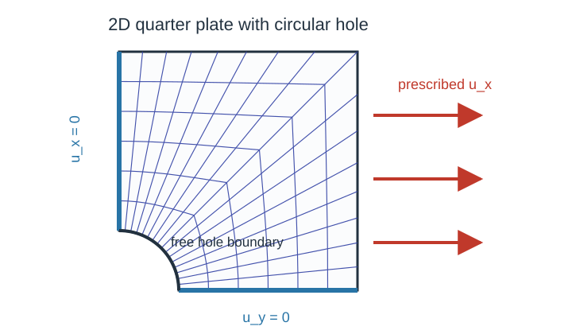
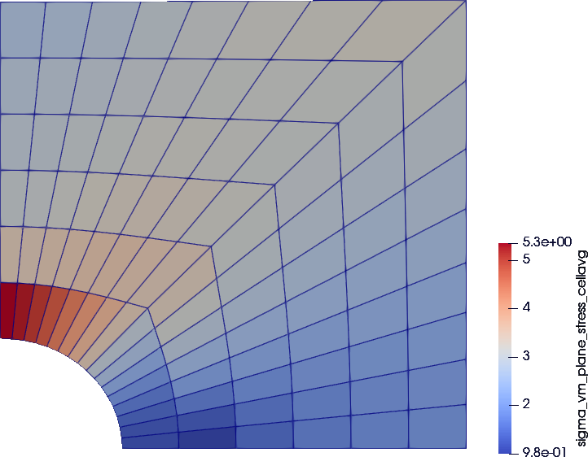

2D plate with a hole
A plane stress, displacement-controlled quarter plate with a circular hole, solved with a NeoHooke material wrapped by PlaneStress. The runnable script is examples/plate_with_hole_planestress.jl and can be executed from the repository root with:
julia --project=. examples/plate_with_hole_planestress.jlProblem setup
We model a quarter of a square plate with a quarter-circle hole in the corner. The plate is plate_size × plate_size, the hole has radius radius. For symmetry, the bottom and left edges are clamped in their normal direction; the right edge is displaced uniformly outward and the top edge is left free. Consequently, the boundary conditions (BCs) follow as
y = 0(bottom edge):u_y = 0(symmetry),x = 0(left edge):u_x = 0(symmetry),x = plate_size(right edge): prescribedu_x = displacement * t(loading).
A structured polar-like mesh is generated by the helper quarter_plate_with_hole_grid. Figure 1 shows a schematic of the mesh and the applied BCs.

Figure 1. Setup of the quarter plate with hole including boundary conditions.Grid, interpolation, constraints
We set up the grid, displacement field, and boundary conditions with standard Ferrite.jl calls:
grid = quarter_plate_with_hole_grid(; nr=6, ntheta=16, radius=0.25, plate_size=1.0) # create the quarter-plate mesh (custom function)
interpolation = Lagrange{RefQuadrilateral,1}()^2 # linear displacement shape functions in 2D
dh = DofHandler(grid) # create the dof handler for the grid
add!(dh, :u, interpolation) # add displacement dofs under the field name `:u`
close!(dh) # finalize the dof numbering
displacement = 0.03 # final prescribed right-edge displacement
ch = ConstraintHandler(dh) # collect Dirichlet boundary conditions
add!(ch, Dirichlet(:u, getfacetset(grid, "symmetry_x"), (x, t) -> [0.0], [2])) # bottom symmetry: u_y = 0
add!(ch, Dirichlet(:u, getfacetset(grid, "symmetry_y"), (x, t) -> [0.0], [1])) # left symmetry: u_x = 0
add!(ch, Dirichlet(:u, getfacetset(grid, "right"), (x, t) -> [displacement * t], [1])) # right-edge loading: u_x = displacement*t
close!(ch) # finalize the constraint dataEach Dirichlet call constrains one displacement direction on one facetset. The right-edge boundary scales linearly with the load parameter t ∈ [0,1].
Material
A compressible Neo–Hookean material in plane stress is applied using
E = 100.0
ν = 0.3
material = PlaneStress(NeoHooke(E, ν))The PlaneStress wrapper turns the 3D NeoHooke into a 2D model by solving for the out-of-plane stretch F̄₃₃ at every quadrature point and statically condensing the tangent. It stores the converged out-of-plane stretch so the next local plane stress solve starts from the previous solution. See Wrappers for the math.
Assembler
create_assembler is the first FerriteSolidMechanics-specific step: it combines the material, dof handler, and constraints into the reusable object used by the solve loop.
assembler = create_assembler(material, dh, ch; quadrature_order=2)The assembler stores the material state at each quadrature point and reuses the arrays needed to assemble the global stiffness matrix and internal force vector.
Load and Newton loop
The prescribed displacement is applied in load steps. stiffness_matrix is called inside each Newton iteration and update_states!(assembler) commits the final state after Newton converges:
u = zeros(ndofs(dh)) # allocate the displacement vector
load_steps = 4 # number of equal load increments
max_newton = 20 # maximum Newton iterations per load step
newton_tol = 1e-8 # residual tolerance
for step in 1:load_steps # advance the prescribed load
t = step / load_steps # current load factor
update!(ch, t) # update time-dependent boundary values
apply!(u, ch) # write prescribed displacements into `u`
for _ in 1:max_newton # Newton iterations for this load step
K, r = stiffness_matrix(assembler, u; dt=1.0 / load_steps) # constitutive evaluation & tangent + residual assembly
apply_zero!(K, r, ch) # apply homogeneous constraints to the correction
if norm(r) < newton_tol # stop once the residual is small enough
break
end
u .-= K \ r # update the displacement vector
end
update_states!(assembler) # commit material states after convergence
endThe keyword dt is the time step by which the material model is evaluated in the current load step. For strain rate-dependent models, this is the physical time increment. As NeoHooke is rate-independent, using dt = 1.0 / load_steps is an arbitrary choice.
update_states!(assembler) is called after the load step has converged, which commits the internal material states at each quadrature point.
Postprocessing
compute_stresses evaluates stresses from the converged displacement field without advancing material history:
stresses = compute_stresses(assembler, u)The result is indexed by quadrature point and cell position and contains the in-plane Cauchy stress tensors.
Additionally, this script prints a short summary:
Solved plate with hole
cells: 96
dofs: 238
max displacement: 0.03
stress entries: 384The final cell-averaged plane stress von Mises stress field from this run is shown in Figure 2. Note that plotting is not covered in this tutorial due to its focus.

Figure 2. Final cell-averaged von Mises stress field.
Swapping the material model
The same Newton loop works with other material models. To swap NeoHooke for another model, change only the material constructor; the assembler, boundary conditions, and postprocessing remain identical:
# Same script, different material:
material = Hooke2D(E, ν; plane_stress=true) # recommended for linear 2D plane stress
material = PlaneStress(Hooke(E, ν)) # equivalent wrapper path, but more expensive
material = PlaneStrain(J2Plasticity(70e3, 0.3, 250.0, 1e3)) # small-strain plasticity
material = PlaneStress(VEPD_Detrez2010(2000.0, 0.3, 10.0, 5.0, 0.1, 1.0, 1.0, 1.0, 10.0, [100.0, 50.0], [0.1, 1.0]))The same solver forwards dt to every material model assigned during assembly. Rate-independent models such as J2Plasticity ignore it; rate-dependent models such as VEPD_Detrez2010 use it in the local history update.
For pure linear 2D elasticity, prefer Hooke2D as it uses the analytical 2D stiffness directly. Use PlaneStrain(Hooke) or PlaneStress(Hooke) only when you want the 3D Hooke model to go through the same 2D wrapper path as other 3D materials, which lack an analytical 2D implementation.
Plain program
The full runnable source is rendered from examples/plate_with_hole_planestress.jl:
using Ferrite
using FerriteSolidMechanics
using LinearAlgebra
"""
quarter_plate_with_hole_grid(; nr=6, ntheta=16, radius=0.25, plate_size=1.0)
Create a structured quadrilateral quarter-plate mesh.
The inner boundary is a quarter circle with radius `radius`; the outer boundary is the square `[0, plate_size] x [0, plate_size]`.
"""
function quarter_plate_with_hole_grid(; nr::Int=6, ntheta::Int=16, radius::Float64=0.25, plate_size::Float64=1.0)
@assert nr >= 1
@assert ntheta >= 2
@assert 0.0 < radius < plate_size
nodes = Node{2,Float64}[]
node_id(i, j) = 1 + i * (ntheta + 1) + j
for i in 0:nr
s = i / nr
for j in 0:ntheta
theta = 0.5 * pi * j / ntheta
inner = Vec((radius * cos(theta), radius * sin(theta)))
outer = if theta <= 0.25 * pi
Vec((plate_size, plate_size * tan(theta)))
else
Vec((plate_size / tan(theta), plate_size))
end
push!(nodes, Node((1.0 - s) * inner + s * outer))
end
end
cells = Quadrilateral[]
for i in 0:(nr - 1), j in 0:(ntheta - 1)
push!(cells, Quadrilateral((
node_id(i, j),
node_id(i + 1, j),
node_id(i + 1, j + 1),
node_id(i, j + 1),
)))
end
grid = Grid(cells, nodes)
addfacetset!(grid, "symmetry_x", x -> isapprox(x[2], 0.0; atol=1e-10))
addfacetset!(grid, "symmetry_y", x -> isapprox(x[1], 0.0; atol=1e-10))
addfacetset!(grid, "right", x -> isapprox(x[1], plate_size; atol=1e-10))
addfacetset!(grid, "top", x -> isapprox(x[2], plate_size; atol=1e-10))
addfacetset!(grid, "hole", x -> isapprox(sqrt(x[1]^2 + x[2]^2), radius; atol=1e-8))
return grid
end
"""
run_plate_with_hole(; kwargs...)
Solve a displacement-driven quarter plate with a circular hole using `PlaneStress(NeoHooke(E, nu))`.
Returns a named tuple with the solution, stresses, grid, dof handler, constraint handler, and assembler.
"""
function run_plate_with_hole(;
nr::Int=6,
ntheta::Int=16,
radius::Float64=0.25,
plate_size::Float64=1.0,
E::Float64=100.0,
nu::Float64=0.3,
displacement::Float64=0.03,
load_steps::Int=4,
max_newton::Int=20,
newton_tol::Float64=1e-8,
)
grid = quarter_plate_with_hole_grid(; nr, ntheta, radius, plate_size)
interpolation = Lagrange{RefQuadrilateral,1}()^2
dh = DofHandler(grid)
add!(dh, :u, interpolation)
close!(dh)
ch = ConstraintHandler(dh)
add!(ch, Dirichlet(:u, getfacetset(grid, "symmetry_x"), (x, t) -> [0.0], [2]))
add!(ch, Dirichlet(:u, getfacetset(grid, "symmetry_y"), (x, t) -> [0.0], [1]))
add!(ch, Dirichlet(:u, getfacetset(grid, "right"), (x, t) -> [displacement * t], [1]))
close!(ch)
material = PlaneStress(NeoHooke(E, nu))
assembler = create_assembler(material, dh, ch; quadrature_order=2)
u = zeros(ndofs(dh))
converged_steps = 0
for step in 1:load_steps
t = step / load_steps
update!(ch, t)
apply!(u, ch)
converged = false
for _ in 1:max_newton
K, r = stiffness_matrix(assembler, u; dt=1.0 / load_steps)
apply_zero!(K, r, ch)
if norm(r) < newton_tol
converged = true
break
end
u .-= K \ r
end
converged || error("Newton iteration did not converge at load step $step")
update_states!(assembler)
converged_steps += 1
end
stresses = compute_stresses(assembler, u)
return (
u=u,
stresses=stresses,
grid=grid,
dh=dh,
ch=ch,
assembler=assembler,
converged_steps=converged_steps,
)
end
if abspath(PROGRAM_FILE) == @__FILE__
result = run_plate_with_hole()
println("Solved plate with hole")
println(" cells: $(getncells(result.grid))")
println(" dofs: $(ndofs(result.dh))")
println(" max displacement: $(maximum(abs, result.u))")
println(" stress entries: $(length(result.stresses))")
end